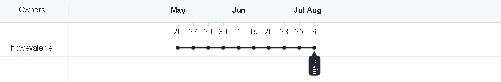

Overview
This python program is a computer program that allows a customer to order sandwiches for the 'Marsden Gourmet Sandwich Bar' It will be designed to allow customers to see the menu, make an order, review their orders, edit their orders, cancel their total order and proceed through a checkout. During the checkout process, the customer will have to select whether they want a pickup or delivery and enter their details appropriately. That is, customers who select pickup will only have to enter their name whereas customers who select a delivery will have to order their name, address, phone number. A delivery order will also incur a $3 delivery fee.
Factors Considered
There were numerous factors considered in the development of this program
- The Agile process of project development through sprints
- Decomposing the program into smaller constituent functions
- Regular and comprehensive testing
- The management of a project backlog for prioritisation of tasks
- Regular commits to GitHub following the completion of sprints
Project Management through GitHub
Throughout the development of this program, I used GitHub for version control. In doing so, I was able to apply the Agile project management technique throughout the project. The Agile methodology involves breaking the project into smaller parts (displayed on a project backlog), developing a program by completing these short passages of work (called sprints) which accomplish tasks in order of priority, and continually reviewing completed sprints. The code associated with each sprint was tested on a separate Python file before being implemented into the main program, where it was tested again. Depending on what I had uncovered during the testing stage, I was then able to tailor the aims of the next sprint. Following the completion of each sprint, the version of the code was committed to Github. This meant that each version of the code was easily accessible throughout the process through GitHub. Furthermore, all the Kanban sprint boards and the overall project backlog are stored on GitHub.
Pushing to GitHub
Overview of Commits on GitHub

Example of GitHub Push on Git Bash

Initial Project Backlog
Throughout the process of developing this program, I had managed and referred back to a Project Backlog. The Project Backlog was set up as a Kanban board on GitHub and contained a list of tasks ordered by priority, with the tasks of highest priority at the top and those of lowest priority at the bottom. It was regularly updated (ie. new items added, tasks reshuffled) throughout the project. The following image displays the status of my Project Backlog at the start.

Network Graph
The Network Graph displays a timeline for the commit history of the program.
Kanban Sprint Boards
Prior to the development of each sprint, I created a Kanban Sprint Board on GitHub outlining the overall plan for that sprint. This enabled me to effectively manage the development of each individual sprint.
Sprint One
Aim
In this sprint, I aim to create a basic program which can perform the following:
I also aim for it to contain an option menu for the two features, clear communication and a neat visual design. I would also like all inputs to be efficiently collected, especially in regards to case sensitivity
Program Plan
Testing Full Program

Reflection
At this stage, the program successfully displays an option menu for two functions: one for printing the sandwich menu and another for exiting the program. It efficiently collects string and integer inputs in a way that is not case-sensitive and displays simple, clear feedback when required (eg. it notifies the customer of when they enter an invalid input). Furthermore, whenever the customer enters an invalid input, they are given the option to enter that input repeatedly until the input entered is valid. It stores information about the sandwiches efficiently in a 2D (Multidimensional) list and makes clear separation of sections with horizontal rules for ease of use.
However, there are still numerous areas for improvement. For example, the customer is unable to do anything else but view the menu and exit the program. Hence, my program could benefit from a greater number of features, the most important perhaps being for the customer to make sandwich orders (type and quantity) and to review their orders. I also realise that the current mechanism for printing the option menu is rather inefficient (printed as a single multi-line string), which makes it difficult to update. Hence, it may also be worthwhile to develop a more efficient method of printing the menu options (eg. by creating a function which loops through a list).Sprint Two
Aim
In this sprint, I aim to develop the sandwich ordering program so that it is capable of facilitating a greater range of features. In particular, I would like to integrate the following features
Program Plan
 Testing Full Program
Testing Full Program
Placing an Order

Reviewing Order
Can merge the printing 2D lists,any(sandwich_choice_letter in nested_list for nested_list in L):
Sprint Three
Aim
In this sprint, I aim to...
Program Plan Testing Full Program
Testing Full Program
Maximum of Five per Order

Reviewing Order with Prices, Quantities and Total

Checkout Process for Pickup

Checkout Process for Delivery
Reflection
Backlog GroomingSprint Four
Aim
In this sprint, I aim to...
Program Plan Testing Full Program
Testing Full Program
Cancelling Complete Order
Preventing Duplicate Orders for the Same Sandwich Type

Edit Order Quantity

Remove Sandwich Type Order

Preventing User from Reviewing Orders when No Orders have been Made

Preventing User from Cancelling Complete Order when No Orders have been Made
Preventing User from Editing Orders when No Orders have been Made

Preventing User from Proceeding to Checkout when No Orders have been Made

Ensure Valid Address and Phone Number
ReflectionReflection
Customer enters [enter] into integer input, causing program crash
Customer enters string into integer input, causing program crash

Customer enters symbols into integer input, causing program crash
Loop does not break
.png)
Sprint Five
Aim
In this sprint, I aim to...
Program Plan Testing Full Program
Testing Full Program
Commenting
Doctypes
Ensure Postcode has 4 Digits
Validate Against inputs of [space] and [enter]
![Sprint 5: Validate Against inputs of [space] and [enter]](assets/img/sprint_5/sprint_5_test_space_nothing.png)
Validate Against String Inputs where Integer Input is required

Ensure Sandwich Quantities are greater than 0

Reflection
Program Crash when a Customer Attempts to edit a Nonexistent Order

Program will not Return to Main Menu when a Customer selects X during "Order Sandwich"

Style Errors from Pycharm


Style Errors from codeWOF


Sprint Six
Aim
In this sprint, I aim to...
Program Plan Testing Full Program
Testing Full Program
Pycharm finds no Style Errors

codeWOF finds no Style Errors

Validating against attempts to Edit a Nonexistent Order

Ensuring that Program will return to Main Menu when the Customer Presses X
Reflection
Backlog GroomingSprint Seven
Aim
In this sprint, I aim to...
Program Plan Testing Full Program
Testing Full Program


Reflection
Backlog GroomingRelevant Implications
Relevant Implications are the possible effects or issues that may result from the creation of a digital product. There are three main relevant implications I have identified as pertinent for this program. These include sustainability and future proofing, functionality and usability.
| Sustainability and Future Proofing | |
|---|---|
| Description | Addressal |
| Future proofing refers to the ease at which a digital product can be updated and maintained. A digital product with a high degree of future proofing will possess a ‘modular’ structure, will follow widely-understood conventions, and will be easily understood and modifiable by others. | The relevant implication of Sustainability and Future Proofing has been addressed in numerous ways throughout the program. For example, comments have been integrated throughout the code and the program has undergone extensive testing through code checkers to ensure that it follows the conventions of the language. The program has also been constructed in a modular manner, consisting of several smaller, constituent functions. This means that new features can be added easily (ie. by creating new functions) without having to alter any pre-existing features. Breaking the program down into these smaller units also makes it easier to comprehend. |
| Functionality | |
|---|---|
| Description | Addressal |
| Functionality refers to the level of efficiency with which a digital product performs its function. A digital product with a high degree of functionality works properly. In particular, a program with high functionality will exhibit extensive validation, will perform calculations correctly and will not crash. | The relevant implication of Functionality has been addressed in this program through regular, comprehensive testing followed by the identification and fixing of any errors found (as has been discussed extensively in my reflections). Furthermore, all inputs have been validated so that any invalid inputs will not result in a program crash, but will instead be met with a polite message asking the User to re-enter the input. |
| Usability | |
|---|---|
| Description | Addressal |
| Usability refers to the degree of difficulty a user experiences during their interaction with a digital product. A digital product with a high degree of usability is ‘user-friendly’. It provides clear, appropriate feedback that is easily understood by the User, prevents errors, confirms the User’s actions, allows the User to gauge their current status and creates outputs that do not use complex or technical language. | The relevant implication of Usability has been addressed in this program in several ways. Firstly, clear headings such as ‘Order Review’ and ‘Order Menu’ have been integrated throughout the program to ensure that the User is always aware of where they are in a process. Furthermore, plain, polite language (as opposed to complex or technical language) has been used throughout the program. In response to all invalid inputs, the program issues a polite error message asking the user to reenter that input and in this process, often highlights the problem (eg. input does not fulfil the appropriate number of digits). Also, each of the User’s actions is met with appropriate feedback/confirmation and the User is always provided with an avenue to ‘exit’ any particular process and return to the main menu should they wish to. |
Example image placements
For images to be responsive (so that they will rescale to suit the width of the parent, use the .img-responsive class.

Ordered list
Ordered lists are used to markup lists where list items require numbering.
- Hendrerit in vulputate velit esse
- Olestie consequat
- Vel illum dolore eu feugiat
- Nulla facilisis at vero eros
- Accumsan et iusto odio
Inline list
You can make the list display inline using the list-inline class.
- One
- Two
- Three
- Four
Buttons
You can apply the btn class to any element that requires a button style.